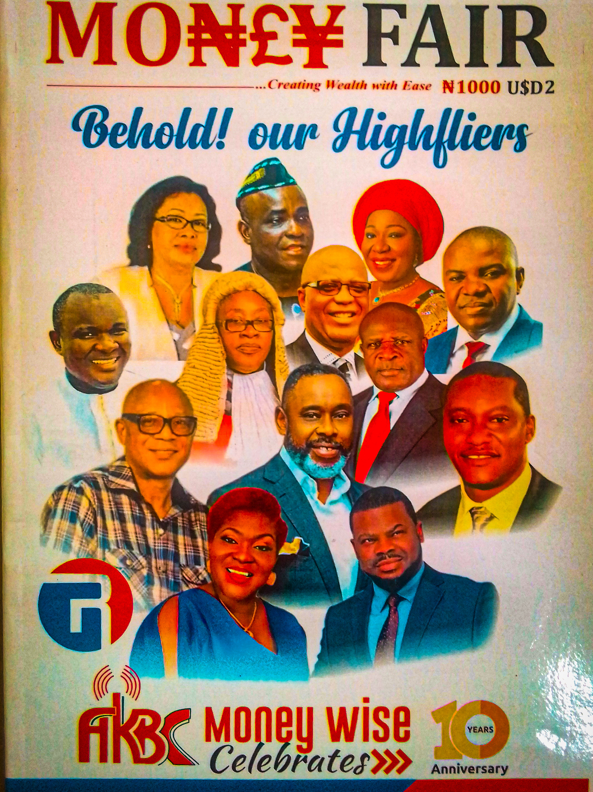
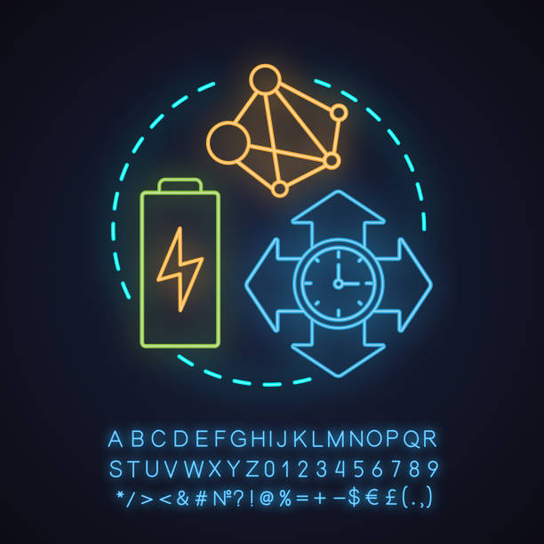
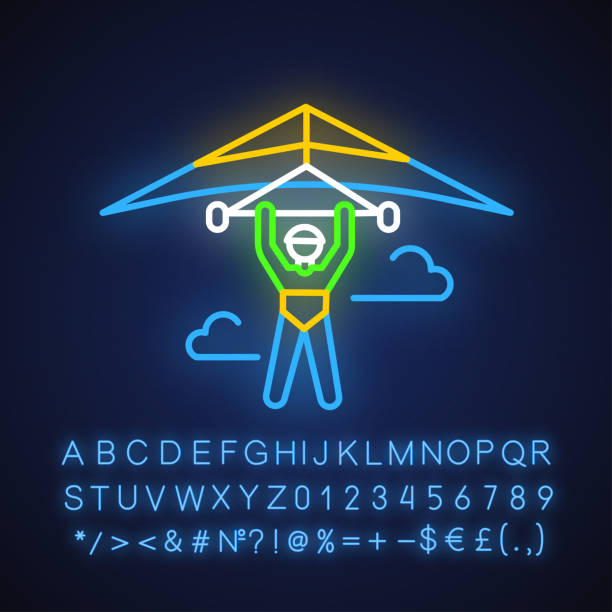
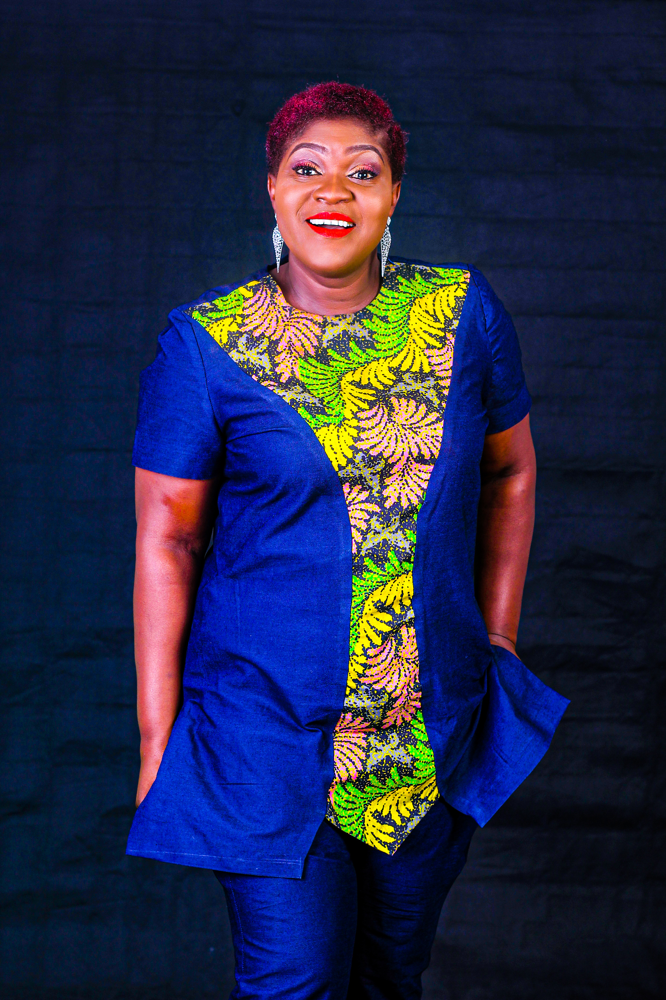

Services we can help you with
Pearl Consult Nigeria Limited is a fast-growing Media
Consultancy Firm in Nigeria that provides services
such as events planning, production of documentaries,
jingles, magazine/book publishing, (E-books),
advertisement of products and services, training,
live talk shows, exciting radio and television
programmes, etc. We are the organizers of
Akwa Ibom Anniversary Queen Pageantry (AAQ),
Akwa Ibom Anniversary Festival (AAF) and
Orange Globe Award (OGA).
Documentaries & Training
We are also dedicated to contributing to the rapid growth of media
and communications in Africa.

Magazine/Book Publishing(E-books)
Pearl consult has a financial upgrade
programme magazine called MoneyFair,
which empowers and starts up businesses for teeming
Nigerians who are interested.
We have a special programme for African children tagged Kidiz
Africana, it has magazine for African children,
We also package a celebration magazine and programme for the
church and Almighty God tagged “Church Gate”.

Live Talk Shows & Live Streaming
Our live talk shows called Angel on TV and Women Television(Wtv),they are
life-changing programs and projects for women and children an offshoot of
remaking the world for women and girls.

Jingle & Programs Production(Radio & TV)
Pearl Consult Nigeria Limited also has a financial upgrade
programme on Radio(MoneyWise) which empowers and starts up
businesses for teeming Nigerians who are interested.

Events Planning/Master of Ceremony
We deliver to you excellent and beautiful moments.
Pearl Consult is poised at Rebranding,
Repositioning, Reintegrating and decorating lives
African Pearls Angel Foundation
African Pearls Angel Foundation is a subsidiary of Pearl
Consult Nigeria Limited, Angel Foundation is a
Non-Governmental organization poised at Rebranding,
Repositioning, and Reintegrating women and children
and decorating lives. It is the one-arm packager
of life-changing programs and projects for women
and children an offshoot of Women Television(Wtv)
remaking the world for women and girls.
.jpg)